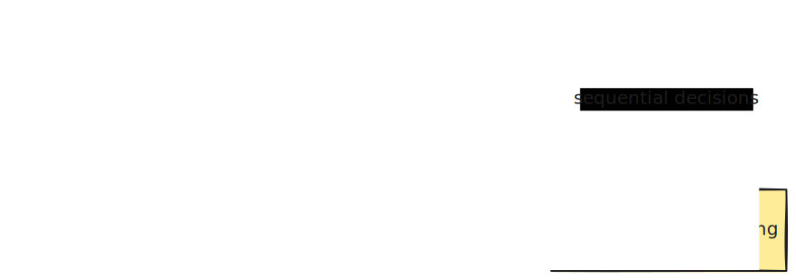
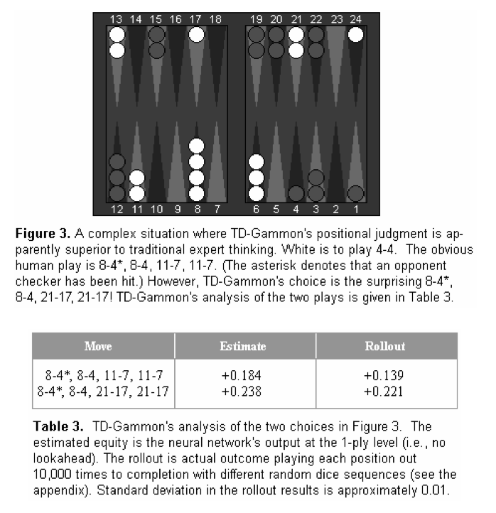
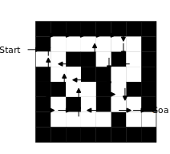
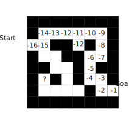
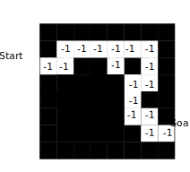

Lecture 1: Introduction to Reinforcement Learning
James Brusey
Outline
- Admin
- About Reinforcement Learning
- The Reinforcement Learning Problem
- Inside An RL Agent
- Problems within Reinforcement Learning
Admin: Textbooks
- An Introduction to Reinforcement Learning, Sutton and Barto, 2018
- Available free online: http://webdocs.cs.ualberta.ca/~sutton/book/the-book.html
- Algorithms for Reinforcement Learning, Szepesvari, 2010
- Available free online: http://www.ualberta.ca/~szepesva/papers/RLAlgsInMDPs.pdf
About RL
Many Faces of Reinforcement Learning
Branches of Machine Learning

Characteristics of Reinforcement Learning
What makes reinforcement learning different from other machine learning paradigms?
- No supervisor, only a reward signal
- Feedback is delayed, not instantaneous
- Time really matters (sequential, non i.i.d. data)
- Agent’s actions affect subsequent data it receives
Examples (from 10 years ago)
- Fly stunt manoeuvres in a helicopter
- Defeat the world champion at Backgammon
- Manage an investment portfolio
- Control a power station
- Make a humanoid robot walk
- Play many different Atari games better than humans
Tesauro's TD Gammon (1992)

Fly stunt manoeuvres in a helicopter (2006)
Atari DQN (Google DeepMind 2016) - Start of DeepRL
Examples (more recently)
- AlphaGo - defeat world champion at Go
- Control cooling for a data centre
- Find faster matrix multiplication algorithms
- Learn to walk (robot dog) in 1 hour
- Play StarCraft 2 better than humans
- Drive Gran Turismo better than humans
- Race drones faster than humans
- Teach LLMs how to behave (RLHF)
Quick exercise (5 mins)
- Go and find web pages, videos, or research papers for as many of the examples as you can
- If you don't have a laptop, use your phone
- If you don't have anything, help a neighbour
The RL Problem
Reward
- A reward \(R_t\) is a scalar feedback signal
- Indicates how well agent is doing at step \(t\)
- The agent’s job is to maximise cumulative reward
- Reinforcement learning is based on the reward hypothesis
All goals can be described by the maximisation of expected cumulative reward
Do you agree?
Examples of Rewards
- Fly stunt manoeuvres in a helicopter
- +ve reward for following desired trajectory
- -ve reward for crashing
- Defeat the world champion at Backgammon
- +/-ve reward for winning/losing a game
- Manage an investment portfolio
- +ve reward for each $ in bank
- Control a power station
- +ve reward for producing power
- -ve reward for exceeding safety thresholds
- Make a humanoid robot walk
- +ve reward for forward motion
- -ve reward for falling over
- Play many different Atari games better than humans
- +/-ve reward for increasing/decreasing score
Sequential Decision Making
- Goal: select actions to maximise total future reward
- Actions may have long term consequences
- Reward may be delayed
- It may be better to sacrifice immediate reward to gain more long-term reward
- Examples:
- A financial investment (may take months to mature)
- Refuelling a helicopter (might prevent a crash in several hours)
- Blocking opponent moves (might help winning chances many moves from now)
Environments (Agent and Environment)

Environments (Agent and Environment)
- At each step \(t\) the agent:
- Executes action \(A_t\)
- Receives observation \(O_t\)
- Receives scalar reward \(R_t\)
- The environment:
- Receives action \(A_t\)
- Emits observation \(O_{t+1}\)
- Emits scalar reward \(R_{t+1}\)
- \(t\) increments at environment step
State (History and State)
- History is the sequence of observations, actions, rewards:
- \(H_t = O_1, R_1, A_1, \ldots, A_{t-1}, O_t, R_t\)
- i.e. all observable variables up to time \(t\)
- i.e. sensorimotor stream of a robot/embodied agent
- What happens next depends on the history:
- agent selects actions
- environment selects observations/rewards
- State is the information used to determine what happens next
- Formally, state is a function of the history:
- \(S_t = f(H_t)\)
State (Environment State)
- The environment state \(S^e_t\) is the environment’s private representation
- i.e. whatever data the environment uses to pick next observation/reward
- Environment state is not usually visible to the agent
- Even if \(S^e_t\) is visible, it may contain irrelevant information
- (Diagram on page 19)
State (Agent State)
- The agent state \(S^a_t\) is the agent’s internal representation
- i.e. whatever information the agent uses to pick the next action
- i.e. the information used by RL algorithms
- It can be any function of history:
- \(S^a_t = f(H_t)\)
- (Diagram on page 20)
State (Information / Markov State)
- An information state (a.k.a. Markov state) contains all useful information from history.
a state \(S_t\) is Markov iff \[ \mathbb{P}[S_{t+1}\mid S_t] = \mathbb{P}[S_{t+1}\mid S_1,\ldots,S_t] \]
- “The future is independent of the past given the present” \[ H_{1:t} \rightarrow S_t \rightarrow H_{t+1:\infty} \]
- Once the state is known, the history may be thrown away
- i.e. state is a sufficient statistic of the future
- Environment state \(S^e_t\) is Markov
- History \(H_t\) is Markov
State (Rat Example)
| 💡 | 💡 | 🕹️️ | 🔔 | ⚡ | |
| 🔔 | 💡 | 🕹️ | 🕹️ | 🧀 | |
| 🕹️ | 💡 | 🕹️ | 🔔 | ? |
- What if agent state = last 3 items in sequence?
- What if agent state = counts for lights, bells and levers?
- What if agent state = complete sequence?
State (Fully Observable Environments)
- Full observability: agent directly observes environment state \[ O_t = S^a_t = S^e_t \]
- Agent state = environment state = information state
- Formally: Markov decision process (MDP)
- (Next lecture and the majority of this course)
State (Partially Observable Environments)
- Partial observability: agent indirectly observes environment:
- robot with camera vision isn’t told absolute location
- trading agent only observes current prices
- poker-playing agent only observes public cards
- Now agent state \(\neq\) environment state
- Formally: partially observable Markov decision process (POMDP)
- Agent must construct its own state representation \(S^a_t\), e.g.
- Complete history: \(S^a_t = H_t\)
- Beliefs of environment state:
- \(S^a_t = (\mathbb{P}[S^e_t=s_1], \ldots, \mathbb{P}[S^e_t=s_n])\)
- Recurrent neural network:
- \(S^a_t = \sigma(S^a_{t-1} W_s + O_t W_o)\)
Inside An RL Agent
Major Components
- An RL agent may include one or more of:
- Policy: agent’s behaviour function
- Value function: how good is each state and/or action
- Model: agent’s representation of the environment
Policy
- A policy is the agent’s behaviour
- Map from state to action, e.g.
- Deterministic policy: \(a = \pi(s)\)
- Stochastic policy: \(\pi(a\mid s)=\mathbb{P}[A_t=a\mid S_t=s]\)
Value Function
- Value function is a prediction of future reward
- Used to evaluate goodness/badness of states
- Therefore to select between actions, e.g.
- \(v^\pi(s) = \mathbb{E}_\pi[ R_{t+1} + \gamma R_{t+2} + \gamma^2 R_{t+3} + \ldots \mid S_t=s]\)
Example (Value Function in Atari)
- (Image-only slide; see page 28)
Model
- A model predicts what the environment will do next
- \(\mathcal{P}\) predicts next state
- \(\mathcal{R}\) predicts next (immediate) reward $$
- \(\mathcal{P}^a_{ss'} = \mathbb{P}[S_{t+1}=s' \mid S_t=s, A_t=a]\)
- \(\mathcal{R}^a_s = \mathbb{E}[R_{t+1} \mid S_t=s, A_t=a]\)
Maze Example (Start)
- Rewards: \(-1\) per time-step
- Actions: N, E, S, W
- States: agent’s location
Maze Example (Policy)

- Arrows represent policy \(\pi(s)\) for each state \(s\)
Maze Example (Value Function)

- Numbers represent value \(v_\pi(s)\) of each state \(s\)
- What is the value for the square marked ?
Maze Example (Model)

- Agent may have an internal model of the environment
- Dynamics: how actions change the state
- Rewards: how much reward from each state
- The model may be imperfect
- Grid layout represents transition model \(\mathcal{P}^a_{ss'}\)
- Numbers represent immediate reward \(\mathcal{R}^a_s\) from each state \(s\) (same for all \(a\))
Categorizing RL agents (1)
- Value-Based
- No policy (implicit)
- Value function
- Policy-Based
- Policy
- No value function
- Actor-Critic
- Policy
- Value function
Categorizing RL agents (2)
- Model-Free
- Policy and/or value function
- No model
- Model-Based
- Policy and/or value function
- Model
RL Agent Taxonomy
- (Diagram on page 36: Model / Value Function / Policy overlap; value-based vs policy-based; model-free vs model-based; actor-critic in intersection)
Problems within RL
Learning and Planning
- Two fundamental problems in sequential decision making
- Reinforcement Learning:
- environment initially unknown
- agent interacts with environment
- agent improves its policy
- Planning:
- model of environment is known
- agent performs computations with model (no external interaction)
- agent improves its policy
- a.k.a. deliberation, reasoning, introspection, pondering, thought, search
Atari Example (Reinforcement Learning)
- Rules of the game are unknown
- Learn directly from interactive gameplay
- Pick actions on joystick, see pixels and scores
- (Diagram on page 38)
Atari Example (Planning)
- Rules of the game are known
- Can query emulator
- perfect model inside agent’s brain
- If I take action \(a\) from state \(s\):
- what would the next state be?
- what would the score be?
- Plan ahead to find optimal policy
- e.g. tree search
- (Diagram on page 39)
Exploration and Exploitation (1)
- RL is like trial-and-error learning
- Agent should discover a good policy
- from experiences of the environment
- without losing too much reward along the way
Exploration and Exploitation (2)
- Exploration finds more information about the environment
- Exploitation exploits known information to maximise reward
- Usually important to explore as well as exploit
Examples (Explore/Exploit)
- Restaurant selection
- Exploitation: go to favourite restaurant
- Exploration: try a new restaurant
- Online banner advertisements
- Exploitation: show most successful advert
- Exploration: show a different advert
- Oil drilling
- Exploitation: drill at best known location
- Exploration: drill at a new location
- Game playing
- Exploitation: play the move believed best
- Exploration: play an experimental move
Prediction and Control
- Prediction: evaluate the future (given a policy)
- Control: optimise the future (find the best policy)
Gridworld Example (Prediction)
- (Gridworld table + question on page 44)
- Question: What is the value function for the uniform random policy?
Gridworld Example (Control)
- (Figure on page 45: gridworld + \(V^*\) + \(\pi^*\))
- Questions:
- What is the optimal value function over all possible policies?
- What is the optimal policy?
Course Outline
- Part I: Elementary Reinforcement Learning
- Introduction to RL
- Markov Decision Processes
- Planning by Dynamic Programming
- Model-Free Prediction
- Model-Free Control
- Part II: Reinforcement Learning in Practice
- Value Function Approximation
- Policy Gradient Methods
- Integrating Learning and Planning
- Exploration and Exploitation
- Case study — RL in Car Climate Control